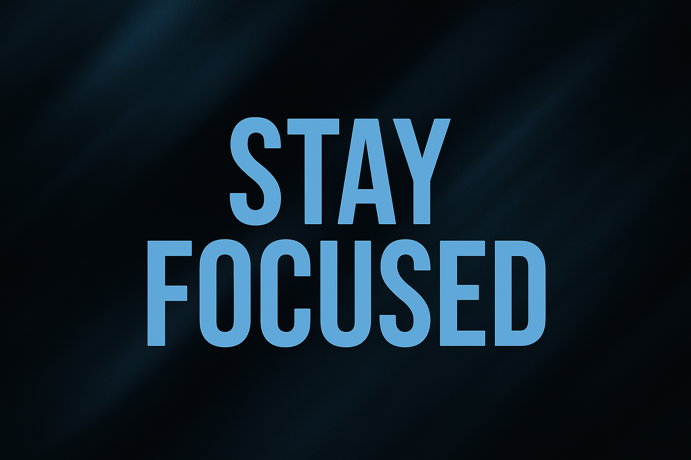

How to Stay Focused in a World Full of Distractions

In today’s fast-moving world, focus has become a superpower. Notifications ping every minute, social media feeds never end, and the pressure to multitask makes it harder than ever to concentrate. Yet, the people who manage to stay focused are the ones who get ahead — not because they have more time, but because they use their attention wisely.
If you’ve ever felt overwhelmed or distracted, you’re not alone. The good news is that focus is a skill you can train, just like any other muscle. In this post, let’s explore practical ways to stay focused and thrive even in a world full of noise.
Clarity Is the Foundation of Focus
You can’t stay focused if you don’t know what you’re focusing on. Many people feel distracted not because they lack discipline, but because they lack clarity.
Ask yourself: What is the one thing I need to do right now that will move me forward?
When you define your priorities, distractions lose their power. A clear goal acts like a compass — guiding your attention back whenever your mind drifts.
Eliminate the Small Distractions
Sometimes, it’s not the big things that break your focus, but the little ones that add up. A buzzing phone, an email notification, or even a cluttered desk can steal more attention than you realize.
Start by removing the obvious distractions:
- Silence notifications during deep work.
- Create a distraction-free workspace.
- Use website blockers if social media tempts you.
The Myth of Multitasking
We’ve been told that multitasking makes us efficient, but science says otherwise. Multitasking divides your attention, making everything take longer and reducing the quality of your work.
True productivity is about single-tasking — doing one thing at a time with full attention. The more you practice focusing on one task, the stronger your concentration becomes.
Build Discipline Through Small Habits
Discipline isn’t built in a day. It’s the result of small, repeated actions that strengthen your ability to focus. Simple habits like starting your day with a to-do list, blocking time for deep work, or practicing mindfulness can rewire your brain for better attention.
Remember, focus isn’t about intensity alone — it’s about consistency.
Rest Is Part of Focus
One of the most overlooked secrets to staying focused is rest. Your brain isn’t designed to work nonstop. Breaks, sleep, and time away from screens aren’t wasted time — they’re fuel for better attention.
The Pomodoro Technique, for example, helps many people: 25 minutes of focused work followed by a 5-minute break. Short breaks refresh your mind and keep distractions from taking over.
Protect Your Energy
Focus isn’t just about time management — it’s about energy management. If you’re tired, stressed, or drained, no productivity hack will work.
Protect your energy by taking care of your health:
- Eat foods that fuel your brain.
- Exercise to release stress and improve concentration.
- Sleep well to recharge your mental clarity.
The Growth Mindset of Focus
Here’s the truth: you will get distracted sometimes, and that’s okay. The goal isn’t perfection — it’s progress. Each time you notice yourself drifting and return to your task, you’re strengthening your focus muscle.
Instead of beating yourself up for losing focus, celebrate the moment you brought your attention back. That’s what builds resilience.
Final Thoughts: Focus is Freedom
In a world full of noise, focus is your competitive edge. It’s not about having more hours in the day — it’s about making the hours you have count.
By practicing clarity, discipline, and energy management, you give yourself the gift of deeper work and meaningful progress. Focus is freedom — the freedom to choose what truly matters and give it your best.
🔁 Did this help you? Share it with a friend who struggles with distractions.
🧠 Remember: The more you train your focus, the more unstoppable you become.